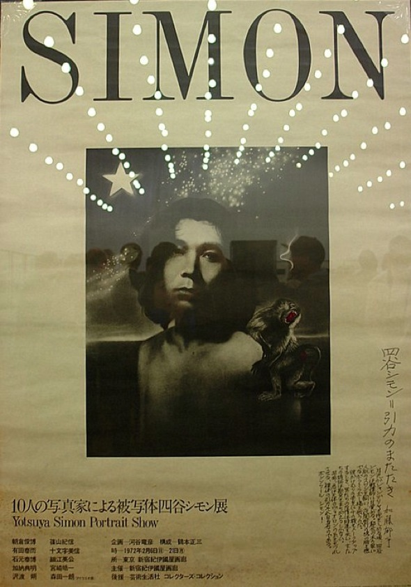
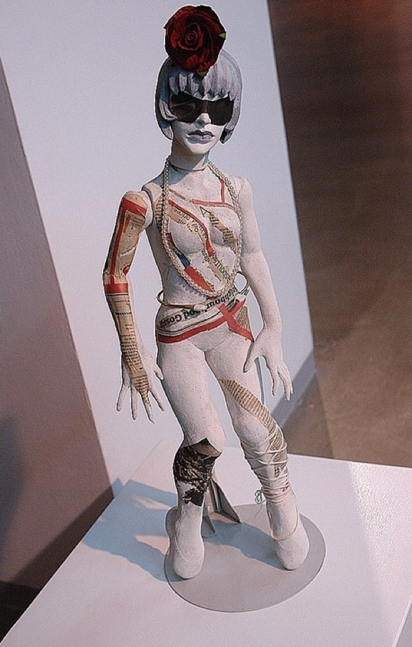
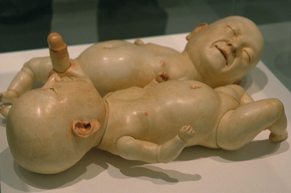
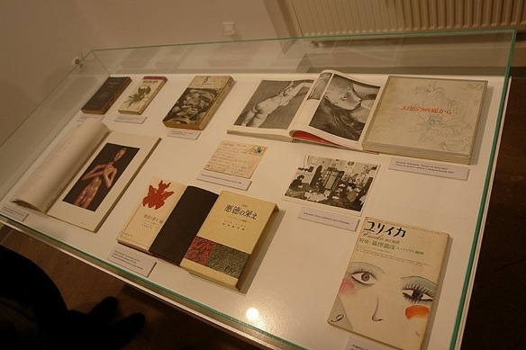
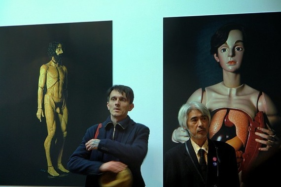
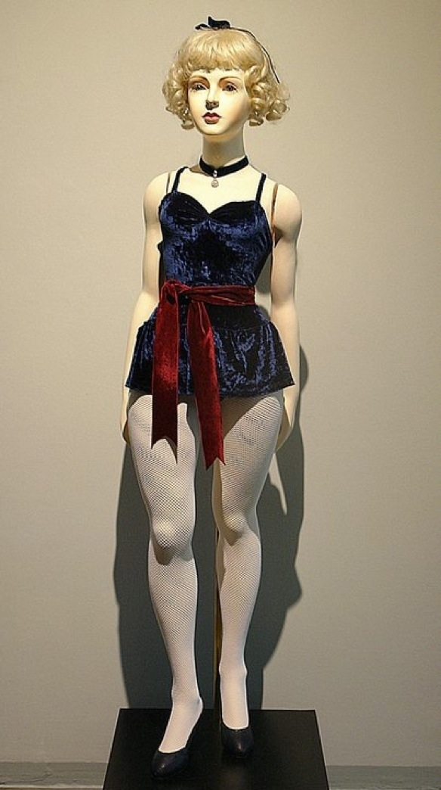
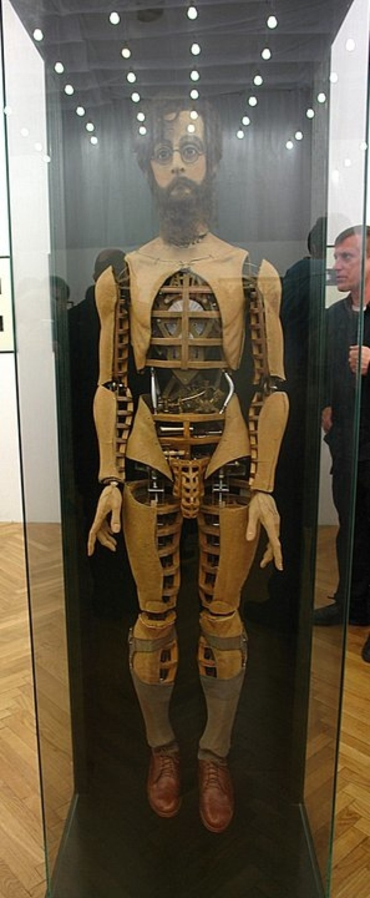
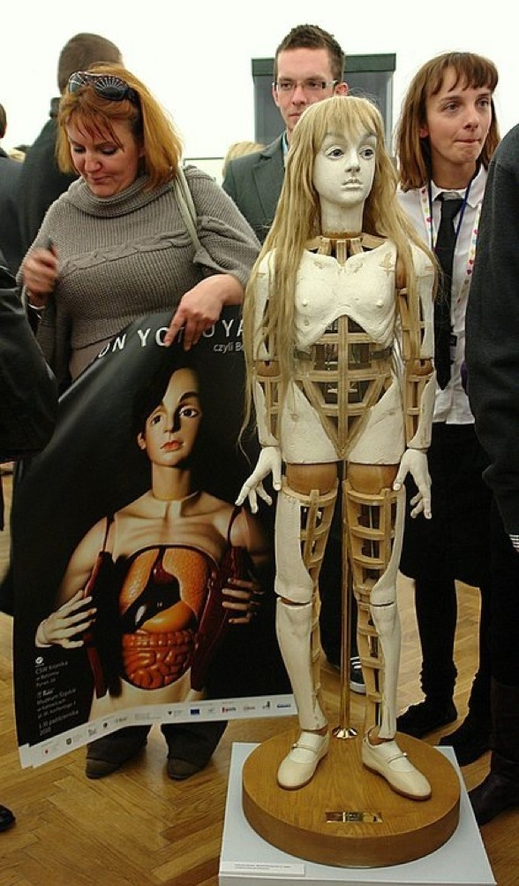

Wystawa w CSW Kronika i Muzeum Śląskim

1 - 31 X 2010









-----------------------Copyright Bellmer Society --------------------------------
FOTORELACJA
Simon Yotsuya i przyjaciele,
czyli Bellmer w Japonii
O tym pierwszym legendarnym już spotkaniu Simona z dziełem Bellmerem opowiada się różne rzeczy. dokonuje się najrozmaitszych analiz, lecz w istocie było do długo oczekiwanie zetknięcie z “postacią ludzką” opowiadającą o tym “czym jest człowek”. (...) Simon doznał jedynego w swoim rodzaju objawienia. (...) Nabrał przekonania, że nie istnieje inna metoda poza metodą Bellmera i jeszcze tego samego dnia wyrzucił materiały, z których dotąd korzystał przy wykonywaniu lalek.
Takio Sugawara, kurator wystawy
FOTOGRAFIE: Malgorzata Borowska
FOTOGRAFIE: Malgorzata Borowska